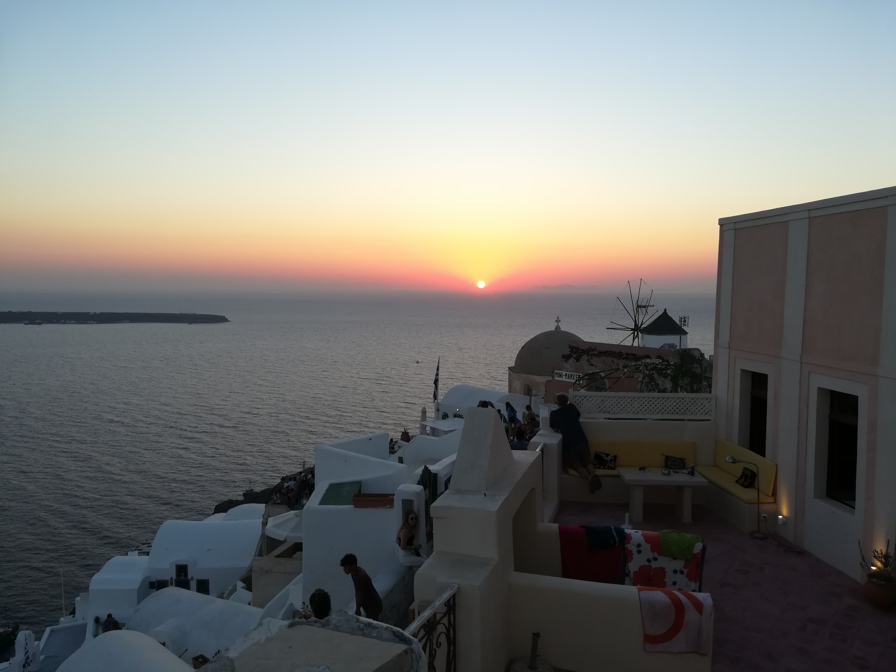
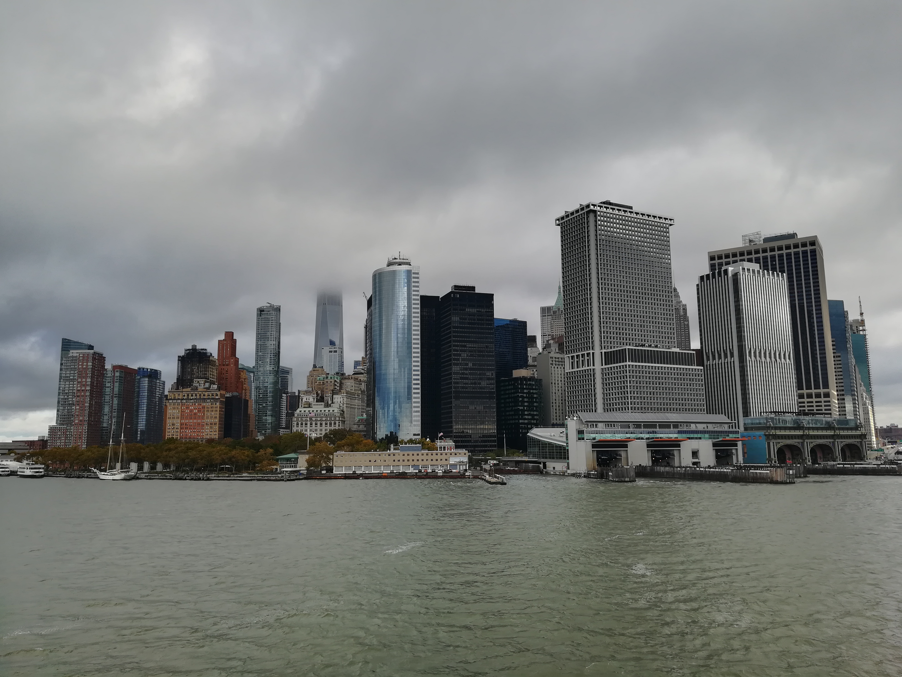
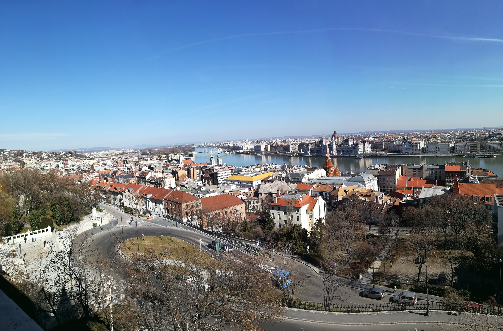
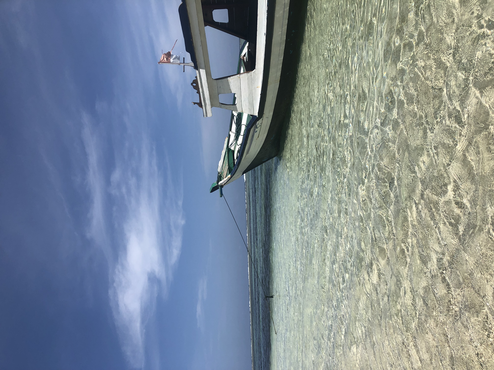
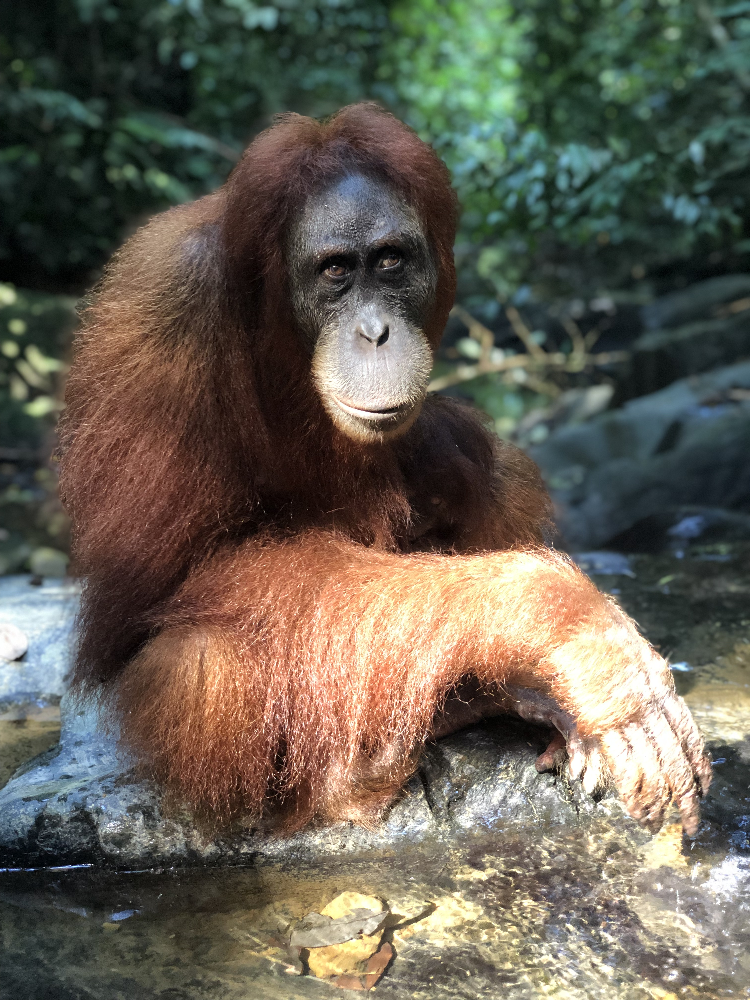
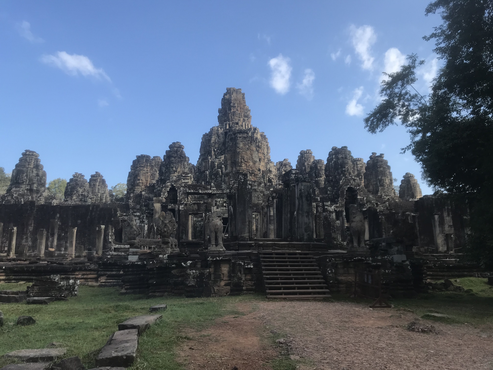
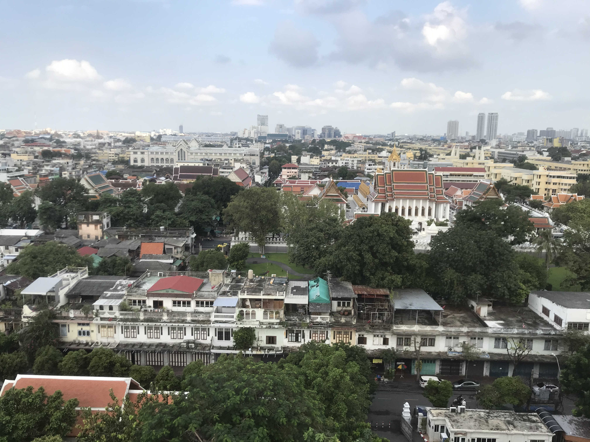

Pictures 📸
-

I went on a wonderful journey in different greek Islands during the summer 2016. I was in Santorini, a white and blue island. Weather and climate were amazing. We visited Athens with the old arena.
-

It was during christmas holidays in 2017. Museums, places and monuments were great. We also have the chance to ice skate and celebrate the New Year's Eve. Such good memories there.
-

I went to the United States of America in 2018. I visited Boston and New York. It was so big and amazing. Lucky to have seen some wales in the north of Boston and participate to the great and famous Thanksgiving.
-

It was during february 2019. The guards changing in front of Prague's castle which one have a first view from St Charles bridge was very impressing.
-


This trip was one of the most wonderful trip I have the chance to live. In fact, it was in summer 2019 and I did so many things that I can even not tell all of them here. During this journey I have learnt many things about different cultures, how life is in this country. I have met new nice persons with whom I have played volley ball. I have gone into the jungle, sharing my lunch with monkeys or orangutans. I have also visited with an association which is called Authentic Sumatra. I have also played and gone surfing with young children in a orphanage, saved eggs turtles from birds. For glance : I have eaten fried rice during three weeks and lost 10 pounds !
-

I was in Cambodia during october 2019. It was really impressive to see one of the most beautiful monument in the world : the Temples of Angkor. I have met young children and played football with them in their schoolyard. It is a really poor land where young children come to you to have food, money...
-


My trip in Thailand was incredible. The weather during october, the people I met, the different places where I was and the activities I have practiced such as visiting Buddhist temples, snorkeling or cooking (spring rolls) were just amazing! A lot of wonderful landscapes and an island, Koh Chang, which is just the paradise.